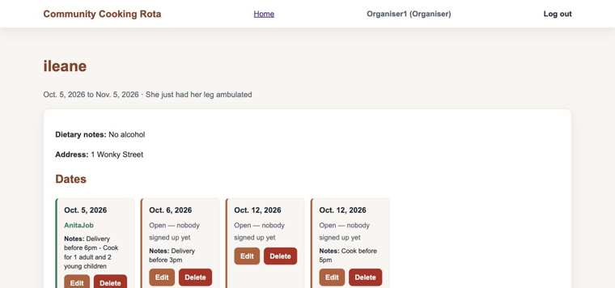
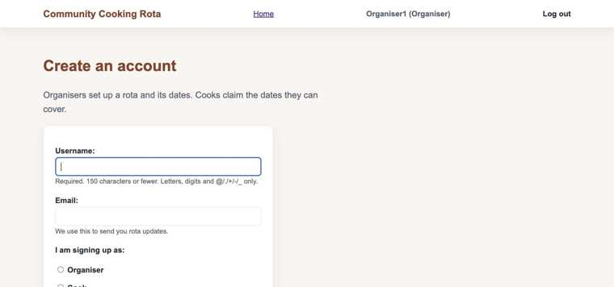
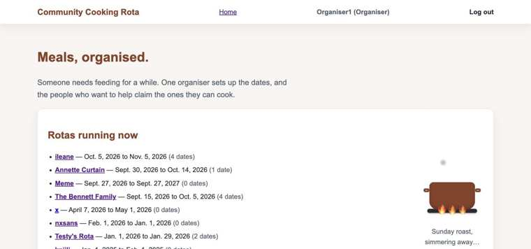

A WCAG 2.1 AA-focused audit of the codebase, the fixes made, and verification steps. Linked from the README's Testing section.
File: templates/rota/rota_detail.html
Every date on a rota has its own "Edit" / "Delete" / "Claim this date" / "Cancel my date" button. Sighted users can tell them apart by position on the page, but a screen reader user browsing by a list of links hears the same word repeated with no way to tell which date each one belongs to (WCAG 2.4.4, Link Purpose in Context).

Added an aria-label to each link that includes the date, so a screen reader announces e.g. "Edit Oct. 12, 2026" instead of just "Edit". The visible button text is unchanged.
<a class="btn btn-small" href="{% url 'rota:slot_update' slot.pk %}" aria-label="Edit {{ slot.date }}">Edit</a>
<a class="btn btn-small btn-danger" href="{% url 'rota:slot_delete' slot.pk %}" aria-label="Delete {{ slot.date }}">Delete</a>
<a class="btn btn-small" href="{% url 'rota:slot_claim' slot.pk %}" aria-label="Claim {{ slot.date }}">Claim this date</a>
<a class="btn btn-small" href="{% url 'rota:slot_cancel' slot.pk %}" aria-label="Cancel my date on {{ slot.date }}">Cancel my date</a>File: static/css/styles.css
When a field fails validation, it gets a permanent red outline (via box-shadow) to flag the problem — but the CSS also set outline: 2px solid transparent on that same field, which silently cancelled the browser's own focus ring. A keyboard user tabbing onto an invalid field had no way to tell "this field currently has my focus" from "this field is just invalid" (WCAG 2.4.7, Focus Visible).
.form-card ul.errorlist + p input:focus-visible,
.form-card ul.errorlist + p select:focus-visible,
.form-card ul.errorlist + p textarea:focus-visible {
outline: 3px solid var(--primary);
outline-offset: 2px;
}Also widened the site's general focus-ring rule, which previously only covered links and buttons, to explicitly cover text inputs, selects and textareas:
a:focus-visible,
button:focus-visible,
input:focus-visible,
select:focus-visible,
textarea:focus-visible {
outline: 3px solid var(--primary);
outline-offset: 2px;
}
File: templates/registration/login.html
A failed login re-renders the page with "That username and password don't match." above the form, but nothing marked it as an error, so a screen reader user wouldn't be told anything went wrong unless they happened to read past it (WCAG 3.3.1, Error Identification). Added role="alert" so it's announced automatically:
<p class="form-error" role="alert">That username and password don't match. Please try again.</p>File: static/js/cooking-scene.js
The decorative caption under the homepage animation rotates every 4 seconds, forever, with no way to stop it. It's inside aria-hidden="true" so screen readers never see it, but WCAG 2.2.2 (Pause, Stop, Hide) still applies to auto-updating content visible for more than 5 seconds. Added a check for the user's reduced-motion preference:
const prefersReducedMotion = window.matchMedia(
"(prefers-reduced-motion: reduce)"
).matches;
if (prefersReducedMotion) return;Every text/background pairing on the site was checked against WCAG AA's 4.5:1 minimum for normal text. All pass — the lowest is 4.54:1 (white button text on the primary orange).
| Element | Foreground | Background | Ratio | Required | Pass? |
|---|---|---|---|---|---|
| Body text | #1f2933 | #f8f5f1 (page) | 13.58:1 | 4.5:1 | Pass |
| Body text on cards | #1f2933 | #ffffff | 14.76:1 | 4.5:1 | Pass |
| Muted text (dates, captions) | #52606d | #f8f5f1 | 5.94:1 | 4.5:1 | Pass |
| Muted text on cards | #52606d | #ffffff | 6.46:1 | 4.5:1 | Pass |
| Brand / heading text | #8a4128 | #ffffff | 7.32:1 | 4.5:1 | Pass |
| White text on primary button | #ffffff | #b85c38 | 4.54:1 | 4.5:1 | Pass |
| White text on button hover | #ffffff | #8a4128 | 7.32:1 | 4.5:1 | Pass |
| White text on danger button | #ffffff | #b3261e | 6.54:1 | 4.5:1 | Pass |
| Error message text | #B02F2F | #FBE8E8 | 5.41:1 | 4.5:1 | Pass |
| "Claimed" status text | #2f7d5b | #f8f5f1 | 4.59:1 | 4.5:1 | Pass |

<label for="..."> tied to every input's id — this already worked correctly.aria-hidden="true", since they're purely decorative.aria-label="Main navigation", and there's a working "Skip to content" link.<fieldset><legend>, the more formally correct way to group radio buttons for screen readers. Not changed here because it means restructuring how that one field renders (Django's default form.as_p doesn't support it directly), which risks affecting the error-highlighting CSS on that page — a minor, AAA-adjacent polish item rather than a failing check.python manage.py runserver and open http://127.0.0.1:8000/.Cmd+F5) is announced automatically.